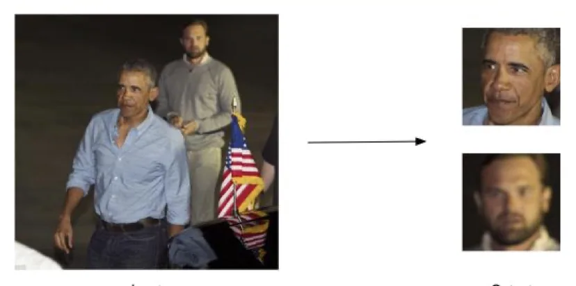
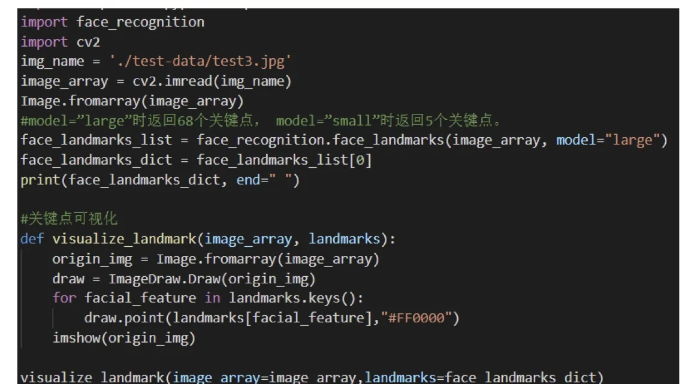
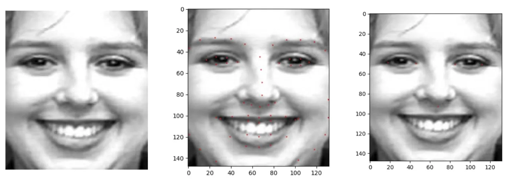
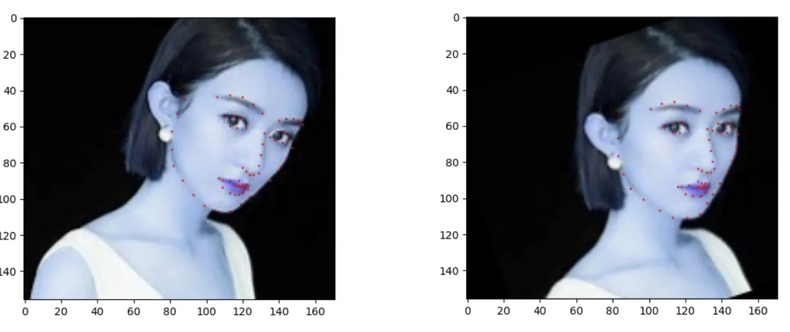
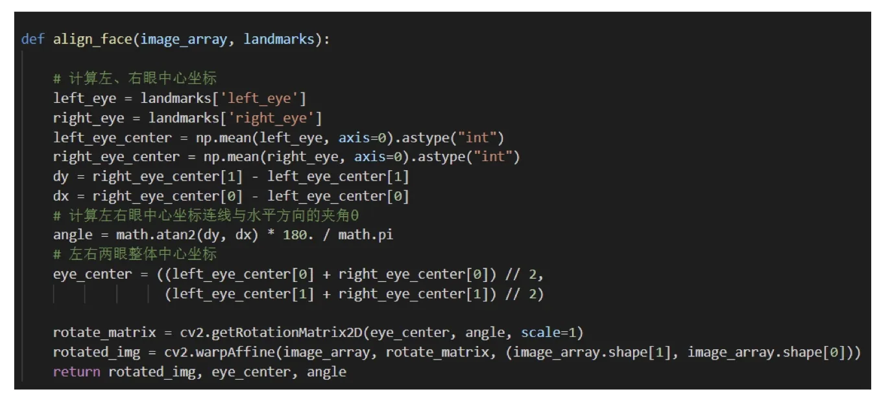

计算机视觉 · 第 8 章 人脸识别
8.9 代码示例：face_recognition 库
理论讲完了，最后一节落地：用 Python 的 face_recognition 库，把检测、对齐、识别三步各写一遍。这一节的代码都很短，重点看两件事——库函数把哪些算法细节封装掉了，以及人脸对齐那段代码里「算角度、绕中心旋转」的几何过程是怎么落到几行 NumPy、OpenCV 调用上的。
1. face_recognition 库
课件推荐的入门库是 Face Recognition（GitHub 仓库：ageitgey/face_recognition）。它的定位是：主要封装了 C++ 图形库，通过 Python 语言将它封装为一个非常简单就可以实现人脸识别的 API 库，屏蔽了人脸识别的算法细节，大大降低了人脸识别功能的开发难度。
这句话值得拆开看。「封装了 C++ 图形库」指的是底层那些真正吃算力的部分（人脸检测、关键点、特征编码）还是 C++ 实现的，Python 层只是接口；「屏蔽算法细节」意味着8.2到8.8讲的那一整套网络，使用者一行都不用写。所以这一节的意义不是「学会调库」，而是亲手验证一遍前面每个环节的输入输出到底是什么样子。
2. 人脸检测
检测只要三行：读图、定位。
import face_recognition
image = face_recognition.load_image_file("your_file.jpg")
face_locations = face_recognition.face_locations(image)返回的 face_locations 就是每张人脸的矩形框——正是 8.2 节里讲的 bounding box。课件用「Input → Output」的形式给出了它的效果：输入一张照片，输出把人脸框出来的结果。

face_locations()，输入一张照片，输出人脸矩形框的位置（原课件第 63 张）3. 人脸对齐（一）：识别关键点
对齐的第一步是拿到关键点。课件给出的脚本如下（model 参数决定关键点的数量）：
import face_recognition
import cv2
img_name = './test-data/test3.jpg'
image_array = cv2.imread(img_name)
Image.fromarray(image_array)
# model="large" 时返回 68 个关键点，
# model="small" 时返回 5 个关键点
face_landmarks_list = face_recognition.face_landmarks(
image_array, model="large")
face_landmarks_dict = face_landmarks_list[0]
print(face_landmarks_dict, end=" ")
# 关键点可视化
def visualize_landmark(image_array, landmarks):
origin_img = Image.fromarray(image_array)
draw = ImageDraw.Draw(origin_img)
for facial_feature in landmarks.keys():
draw.point(landmarks[facial_feature], "#FF0000")
imshow(origin_img)
visualize_landmark(image_array=image_array,
landmarks=face_landmarks_dict)
plt.show()这里有两个细节呼应前面的理论。一是关键点的数量是可选的：model="large" 给 68 个点，model="small" 给 5 个点——后者正是 DCNN、MTCNN 用的那五个（两眼、鼻尖、两嘴角）。二是返回的是一个字典，按五官部位分组，所以画点时遍历 landmarks.keys() 就能把每个部位的坐标点批量画出来。

face_landmarks() 返回按部位分组的坐标字典，再按部位把点画到原图上（原课件第 64 张）把这段代码跑出来，就能看到课件给出的三张对比图：原图、68 个关键点、5 个关键点。

4. 人脸对齐（二）：旋转的几何过程
拿到关键点之后，对齐的思路只有四步，课件写得很清楚：
- 分别计算左、右眼中心坐标；
- 计算左右眼中心坐标连线与水平方向的夹角 θ；
- 计算左右两眼整体中心坐标；
- 以左右两眼整体中心坐标为基点，将图片 array 逆时针旋转 θ。
为什么用两只眼睛？因为两眼连线是头部姿态最稳定、最容易定位的一条基准线：只要把这条线转到水平，头部的滚转（roll）就被校正了。旋转中心取两眼中心的中点，是为了让脸在旋转后仍然大致居中，不至于转出画面。
课件还给了两条提示。第一，将图片旋转后同时也要将关键点做旋转——关键点和图像必须待在同一个坐标系里，否则后续按关键点做的裁剪、变换都会错位。第二，前一张对比图就是对这一步的验证：对齐前、对齐后，同一张侧倾的脸被摆正了。

把这个思路写成代码就是下面这个函数：
def align_face(image_array, landmarks):
# 计算左、右眼中心坐标
left_eye = landmarks['left_eye']
right_eye = landmarks['right_eye']
left_eye_center = np.mean(left_eye, axis=0).astype("int")
right_eye_center = np.mean(right_eye, axis=0).astype("int")
dy = right_eye_center[1] - left_eye_center[1]
dx = right_eye_center[0] - left_eye_center[0]
# 计算左右眼中心坐标连线与水平方向夹角 θ
angle = math.atan2(dy, dx) * 180. / math.pi
# 左右两眼整体中心坐标
eye_center = ((left_eye_center[0] + right_eye_center[0]) // 2,
(left_eye_center[1] + right_eye_center[1]) // 2)
rotate_matrix = cv2.getRotationMatrix2D(
eye_center, angle, scale=1)
rotated_img = cv2.warpAffine(
image_array, rotate_matrix,
(image_array.shape[1], image_array.shape[0]))
return rotated_img, eye_center, angle
np.mean 求两眼中心、atan2 求夹角 θ，再用 getRotationMatrix2D + warpAffine 绕两眼中点旋转图像（原课件第 68 张）三处细节对应前面讲的几何：
np.mean(left_eye, axis=0)：眼睛在字典里是一组轮廓点，取均值得到「眼中心」这一个点——这也解释了为什么 68 点比 5 点更适合做这种平均；math.atan2(dy, dx)：用atan2而不是atan(dy/dx)，可以正确处理 dx 为 0 和各种象限的情况，再乘180./math.pi转成角度制；cv2.getRotationMatrix2D(eye_center, angle, scale=1)加cv2.warpAffine：先由中心点和角度构造二维旋转矩阵（scale=1表示不缩放），再把它作用到整幅图像上，得到对齐后的图。
注意最后返回了 eye_center 和 angle——这两个量正是「把关键点也一起旋转」所需要的：对每一个关键点施加同一个旋转矩阵即可。
5. 人脸识别
最后一步是识别。做法是先把两张脸各自编码成特征向量，再比较它们的距离：
import face_recognition
known_image = face_recognition.load_image_file("biden.jpg")
unknown_image = face_recognition.load_image_file("unknown.jpg")
biden_encoding = face_recognition.face_encodings(known_image)[0]
unknown_encoding = face_recognition.face_encodings(unknown_image)[0]
results = face_recognition.compare_faces(
[biden_encoding], unknown_encoding)这段代码几乎就是 8.8 节 FaceNet 的直译：face_encodings() 对应「把人脸映射到欧几里得空间」，得到的一维向量就是身份编码；compare_faces() 对应「用空间距离判断相似性」，返回是否同一个人。课件给出的运行结果是：输入一张 unknown 图片，输出判定为「Picture contains "Joe Biden"」。
把整章串起来看，这几行代码背后是：检测（找到脸）→ 关键点（对齐，摆正脸）→ 特征编码（映射到向量空间）→ 距离比较（判定身份）。库把这条链路封装成了一两个函数，但每一环为什么会存在、失败时会怎样，正是本章前面八节要讲的东西。
本节小结
- face_recognition 库封装了 C++ 图形库，用 Python 提供极简的人脸识别 API，屏蔽了算法细节；底层的检测、关键点与特征编码正是本章前面讲的那些网络。
- 人脸检测：
load_image_file()读图，face_locations()返回人脸矩形框。 - 人脸对齐：
face_landmarks(image_array, model="large")返回 68 个关键点、model="small"返回 5 个；对齐思路是算左右眼中心 → 用atan2求连线与水平方向夹角 θ → 求两眼整体中心 → 以该中心为基点逆时针旋转 θ，旋转图像时关键点必须一起旋转；代码用getRotationMatrix2D构造旋转矩阵、warpAffine施加到图像上。 - 人脸识别：
face_encodings()把人脸编码成特征向量，compare_faces()比较向量距离给出「是否同一个人」——这就是 FaceNet 思路的库调用形式。